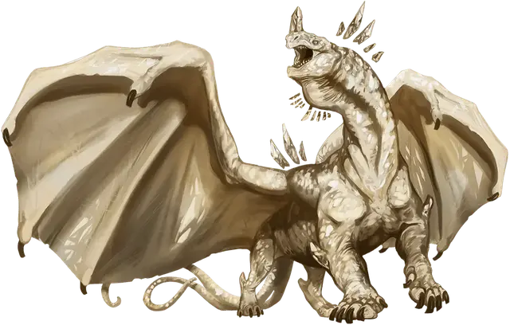

Древний кристаллический дракон
Ancient Crystal Dragon
Громадный Дракон (Самоцветный), хаотично-нейтральный

Класс Доспеха 20 (природный доспех)
Хиты 222 (12к20 + 96)
Скорость 40 футов, летая 80 футов, лазая 40 футов, копая 40 футов
| мод | спас | ||
|---|---|---|---|
| СИЛ | 25 | +7 | +7 |
| ЛОВ | 12 | +1 | +7 |
| ТЕЛ | 26 | +8 | +14 |
| мод | спас | ||
|---|---|---|---|
| ИНТ | 20 | +5 | +5 |
| МДР | 16 | +3 | +9 |
| ХАР | 21 | +5 | +11 |
Навыки Восприятие +15, Выживание +9, Скрытность +13
Сопротивление урону излучение, холод
Чувства слепое зрение 60 футов, тёмное зрение 120 футов, пассивное Восприятие 25
Языки Общий, Драконий, Телепатия 120 фт.
Опасность 19 (22000 опыта)
Бонус мастерства +6
Особенности
Легендарное сопротивление (3/день). Если дракон провалит спасбросок, он может вместо этого сделать спасбросок успешным.
Персонализация дракона. Как уже говорилось в «Руководстве Мастера», вы можете настроить блок статистики любого дракона, чтобы отразить его уникальный характер. Незначительные изменения, такие как приведенные ниже, легко сделать, и они не влияют на ПО дракона. (Fizban's Treasury of Dragons)
Языки. Большинство драконов предпочитают говорить на Драконьем, но для общения с союзниками и приспешниками изучают Общий. Но, учитывая высокий Интеллект и продолжительный срок жизни, драконы могут легко выучить дополнительные языки. Вы можете добавить языки в блок статистики дракона.
Навыки. Большинство драконов владеют навыками Восприятие и Скрытность, а многие драконы владеют дополнительными навыками. Как и в случае с языками, вы можете изменить список навыков дракона (даже удвоить бонус мастерства), чтобы отразить его интересы и занятия. Вы также можете наделить дракона владениями инструментами, особенно если дракон проводит время в гуманоидной форме.
Другие черты и действия. Вы можете заимствовать черты и действия у других монстров, чтобы придать дракону уникальную изюминку. Рассмотрим эти примеры:
Изменение формы. Вы можете решить, что дракон приобретает это действие в более раннем возрасте, чем обычно, особенно если вы хотите представить в своей кампании дракона в гуманоидной форме. (См. металлические драконы).
Поглощение урона. Вы можете решить, что красный или золотой дракон не только не получает урон от огня, но и исцеляется от него. (См. мясной голем [flesh golem]).
Облёт. Дракон - проворный летун, быстро вылетающий из зоны досягаемости врагов. (См. перитон [peryton]).
Подражание. Изображение персонажей или их союзников может стать забавным трюком для хитрого дракона. (См. кенку [kenku]).
Омоложение. Вы можете решить, что драконы в вашей кампании, будучи неотъемлемой частью Материального плана, почти невозможно уничтожить. Жизненная сущность дракона может храниться в яйце, из которого он появился на свет, в его кладе или в пещерном зале в центре мира, так же как сущность лича спрятана в филактерии. (См. лич [lich]).
Особые чувства. У большинства драконов есть слепое зрение и темное зрение. Вы можете улучшить зрение до истинного зрения или наделить дракона скоростью рытья или чувством вибрации. (См. зрение и свет).
Прокладывание туннеля. Эта особенность может быть присуща любому дракону, обладающему скоростью копания - он может двигаться сквозь твёрдую породу, оставляя за собой туннель. (См. бурый увалень [umber hulk]).
Действия
Мультиатака. Дракон совершает одну атаку Укусом и две Когтями.
Укус. . Рукопашная атака оружием: +13 к попаданию, досягаемость 15 фт., одна цель. Попадание: 18 (2к10+7) колющего урона плюс 9 (2к8) урона излучением.
Когти. . Рукопашная атака оружием: +13 к попаданию, досягаемость 10 фт., одна цель. Попадание: 14 (2к6+7) рубящего урона.
Использование заклинаний (Псионика). Дракон накладывает одно из следующих заклинаний, не требующее компонентов заклинания и использующее Интеллект в качестве базовой характеристики (Спасбросок от заклинаний Сл 19):
• Неограниченно: пляшущие огоньки [dancing lights], указание [guidance];
• 1/день каждое: приказ [command], предсказание [divination], гипнотический узор [hypnotic pattern], высшее восстановление [greater restoration], невидимость [invisibility].
Мерцающее дыхание (Перезарядка 5-6). Дракон выдыхает ярко сияющую вспышку в 90-футовом конусе. Все существа в этой области должно совершить Спасбросок Телосложения Сл 22, получив 49 (11к8) урона излучением при провале спасброска или половину урона при успешном. После чего дракон получает 25 временных хитов, поглощая часть энергии излучения.
Бонусные действия
Изменение формы. Дракон волшебным образом превращается в любое существо Среднего или Маленького размера, сохраняя при это свои характеристики (кроме размера). Дракон принимает истинное обличие, если его хиты уменьшаются до 0, или он использует бонусное действие, для окончания этого эффекта.
Псионический шаг. Дракон волшебным образом телепортируется в свободное пространство, которое может видеть в радиусе 60 фт. от себя.
Легендарные действия
Дракон может совершить 3 легендарных действия, выбирая из представленных ниже вариантов. За один раз можно использовать только одно легендарное действие, и только в конце хода другого существа. Дракон восстанавливает использованные легендарные действия в начале своего хода.
Коготь. Дракон совершает атаку когтем.
Псионика (стоит 2 действия). Дракон использует Псионический шаг или Использование заклинаний.
Звездный удар (стоит 3 действия). Дракон выпускает обжигающий луч звездного света в существо, которое он видит в пределах 60 футах. Цель должна преуспеть в спасброске Ловкости Сл 19, в случае провала получая 38 (11к6) урона излучением.
Логово
Кристаллические драконы обитают в холодных регионах, где они строят ледяные и снежные сооружения, напоминающие замки, но открытые небу. Сверкающие кристаллы, разбросанные по их логовищам, светятся собранным звездным светом, а пещеры или туннели подо льдом и снегом обеспечивают защищенные области для их сокровищ. Они используют свою способность рыть норы, чтобы рыть преграды и потайные ходы по всему своему логовищу, позволяя им легко передвигаться — и оставаться потенциально незамеченными.
Показатель опасности древнего кристаллического дракона увеличивается на 1 (ПО 20 - 25 000 опыта) , когда сражение происходит в его логове.
Действия логова
Логово имеет значение инициативы «20» (проигрывает при равенстве): дракон может выполнить одно из следующих действий в логове; дракон не может выполнять одно и то же действие в логове два раунда подряд:
Манящий шёпот. Дракон телепатически шепчет одному существу, находящемуся в пределах досягаемости его телепатии. Существо должно преуспеть в спасброске Мудрости Сл 15 или станет очарованным драконом до начала следующего хода логова. Существо, очарованное таким образом, в меру своих возможностей подчиняется любой команде дракона, которая не наносит прямого вреда существу.
Ледяной проход. Дракон может открыть проход через стену льда или снега толщиной до 5 футов, создавая отверстие шириной и высотой до 30 футов.
Отблеск звездного света. Дракон выбирает точку, которую он может видеть в логове. Мерцающий звездный свет начинает исходить из этой точки, заполняя сферу радиусом 10 фт. тусклым светом. Каждое существо, кроме дракона, в этой области, в момент появления света, должно преуспеть в спасброске Ловкости Сл 15, в случае провала получая 13 (2к12) урона излучением и становится подсвеченным. Броски атаки, совершаемые по подсвеченному таким образом существу, совершаются с преимуществом, и существо не может спрятаться или получать преимущество от того, что оно невидимо. Звездный свет и свечение вокруг любого существа исчезают, когда значение инициативы в следующем раунде достигнет «20».
Местные эффекты
Область, окружающая легендарное логово кристаллического дракона, изменяется магией дракона, создавая один или несколько из следующих эффектов:
• Чистое небо. Небо над логовом кристаллического дракона остается ясным и свободным от осадков, если только оно не изменено магическим образом. Дует лёгкий ветер, не представляющий особой угрозы для тех, кто приближается к логову, и видимость остается наилучшей в любое время.
• Изобилие кристаллов. В природном камне в радиусе 6 миль от логова образуется множество кристаллов кварца, особенно в местах, где на кристаллы может падать естественный свет.
• Ледяной взгляд. Лед и кварц в радиусе 6 миль от логова становятся проводниками псионического присутствия дракона. Действием дракон может наложить заклинание подсматривание [clairvoyance], не требующее компонентов заклинания и нацеленное на любые кристаллы льда или кварца в этом регионе.
• Положительная энергия. Любое существо, которое заканчивает продолжительный отдых в радиусе 6 миль от логова, получает две дополнительных Кости Хитов.
• Разрастание дикой природы. Рыбы и другие водные животные быстро размножаются и процветают в водоемах в радиусе 6 миль от логова. Добывание пищи в этих водах дает вдвое больше обычного количества пищи.
Если дракон умирает, популяция животных вблизи логова возвращается к нормальному уровню в течение 1к10 дней. Увеличение Костей Хитов немедленно оканчивается. Существующее обилие кристаллов кварца сохраняется, но новые кристаллы образуются с нормальной скоростью.
Описание
Переливаясь лучистой энергией и наполняясь жизнью, кристаллические драконы наслаждаются врожденной псионической связью с Положительным Планом, который наполняет их тела, а также их личности светом. Хотя они предпочитают жить в пустынных, холодных регионах, многие из них являются одними из самых дружелюбных представителей драконьего рода, заботливых и оптимистичных.
Внутреннее свечение. При вылуплении, кристаллические драконы имеют тускло-серую чешую с несколькими белыми или прозрачными кристаллическими точками, что позволяет драконам сливаться со скалистой местностью перед лицом опасности. С возрастом их чешуя становится белоснежной, а затем медленно становится прозрачной. У старейших кристаллических драконов чешуя совершенной чистоты, которая изгибает и преломляет свет, иногда затрудняя их четкую видимость.
Энергия изучения Положительного Плана мерцает в чешуе кристаллических драконов. Он светится, как звездный свет, сквозь телами и шипами и рогами, которые парят близко к их головам и спинам. Эти рога меняются в зависимости от настроения дракона: ощетиниваются от гнева, откидываются назад со страхом или подозрением и колышутся волнами из стороны в сторону от веселья или радости.
Видения в свете звёзд. Многие кристаллические драконы изучают звезды, записывая свои наблюдения за ночным небом и отслеживая знаки, написанные в звездном свете. Они воспринимают эти знаки как предзнаменования, дающие им представление о том, что должно произойти, и они с нетерпением изучают потенциальное будущее любых существ, которые приходят к ним с миром.
Связь кристаллических драконов с сияющими силами Положительного Плана способствует воспитанию оптимистичного отношения у большинства из этих драконов. Иногда они усыновляют брошенные яйца или детенышей других драконов; многие вирмлинги белого дракона были выращены в заботливой обстановке логова кристаллического дракона. Но они яростно противостоят разрушительным силам на своих родных территориях, что иногда приводит к тому, что соседствующие ледяные великаны и белые драконы откладывают свою взаимную вражду, чтобы охотиться на них.
Сверкающие сокровища. В своих сокровищах кристаллические драконы ценят бриллианты и безделушки, преломляющие свет, коллекции пророчеств, труды по астрономии и звездные карты. Когда дело доходит до магических сокровищ, они ищут предметы и заклинания, которые предсказывают будущее, создают или управляют светом или направляют позитивную энергию для исцеления и воспитания.